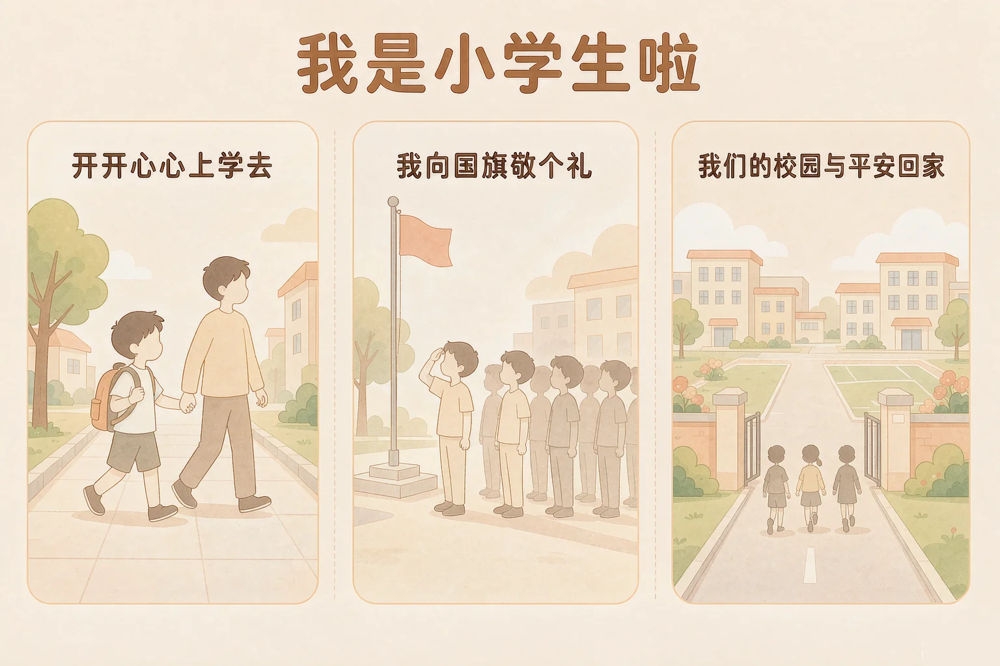
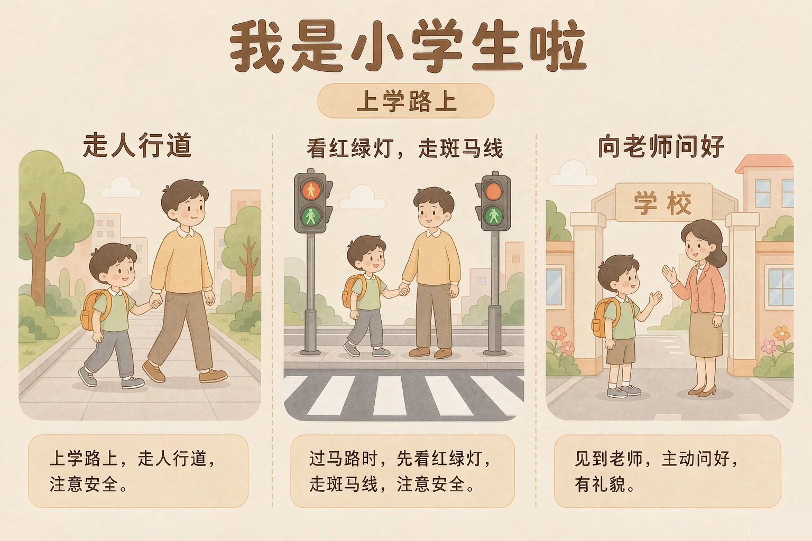
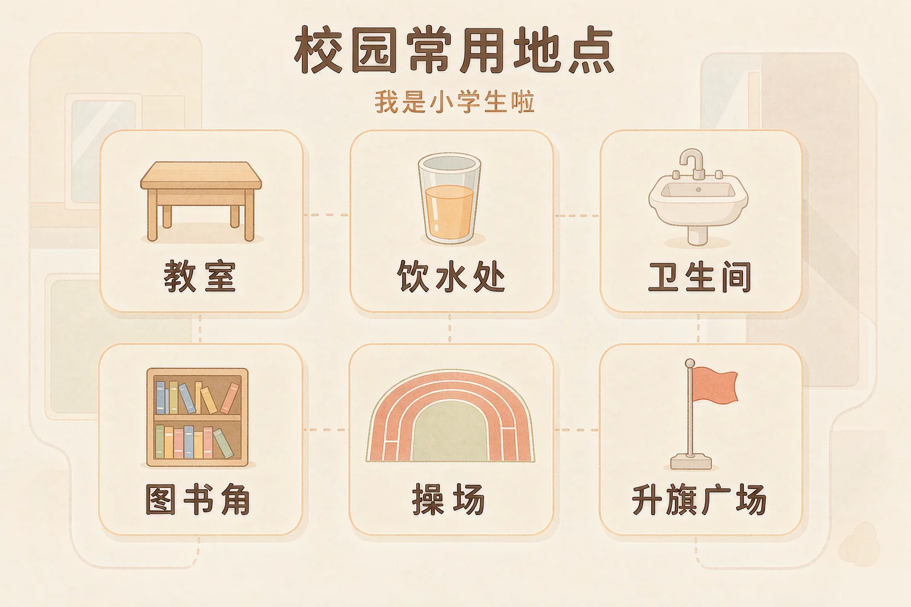

Gallery
v1.0.0 · skill v7.22.0
小学一年级 · 道德修养
第一天背起书包走进校门，该怎么做，才能开开心心上学去、平平安安回家来？

选一个你真正想知道的问题，后面的活动都会围着它转。
选择或输入后，这节课会围绕你的问题展开。
先凭直觉选一个，选完立刻看到解释——错了也没关系，正好知道要重点听哪里。
1. 过马路的时候，怎么做最安全？
看信号灯、走斑马线、有大人在身边，这三件事一起做到才最稳当。错因提醒：常见错误是误认为「没看到车就可以过」——车来得比我们想得快，一定要看信号灯。
2. 星期一早上，国歌响起来了，下面哪个做法最合适？
国旗是我们国家的象征，国歌响起时要停下动作、站好、不说话，认真地唱国歌。错因提醒：有人误认为「只要不出声就够了」——还要停下手里的事、站好、面向国旗，这样才庄重。
3. 在学校里口渴了，应该去哪里？
饮水处是接水喝的地方，课间去接好水，慢慢喝。错因提醒：容易把饮水处和保健室搞混——保健室是身体不舒服的时候才去的。
为什么要学这一课？
在幼儿园的时候，我们每天也有家里人接送，走一小段路就到（And）；可是上了小学，路要自己走，校门更大、人更多，路上有红绿灯也有车，走错了会不安全（But）；所以先来学一学，从家门口到教室，一路上该怎么做（Therefore）。
从家里出门，到走进教室坐下来，中间有几件很小、但很重要的事。做好它们，上学这一天开头就顺了。
出门以前
检查书包和水杯带好了没有；跟家里人说一声「我去上学啦」；和家人一起出门。
走在路上
走在人行道上，牵着大人的手；过马路看清红绿灯，走斑马线；不追跑、不打闹。

🔍 深层理解 换个角度再看一遍这件事，看看能不能说出背后的原理。
看见它：安全的做法都是能看见的小动作：牵着手、看灯、走斑马线、慢慢走。它们不在纸上，就在每一步里。
解释它：为什么这几件事能保护我们？因为司机能看见走斑马线的人，大人能拉住突然想跑的你——把「别人看得见我」变成一件确定的事。
迁移它：去公园、去超市、去外婆家，路上也是这几件事。地方换了，做法不变：走人行道、看信号灯、有大人陪着。
先点一件你今天可能遇到的事，再从三个做法里选一个。选得好会告诉你为什么，选得不太合适也会告诉你还可以试试什么。
先点一件今天可能遇到的事。
每个星期一早上，学校都要举行升旗仪式。国旗是我们国家的象征，升国旗、奏国歌是一件很庄重的事。
有的同学误认为「升旗的时候只要不说话就算做到了」。其实还要停下手里的事、面向国旗站好。这些动作，是我们对国旗、对祖国表达尊敬的方式。
除了升旗的地方，学校里还有几个每天都会去的地方，认清楚它们，走到哪里都不慌。

🔍 深层理解 换个角度再看一遍这件事，看看能不能说出背后的原理。
看见它：国旗是国家的象征。升国旗的时候，全校同学停下动作、站好、面向国旗，这一个整齐的动作，就是大家在说同一句话。
比较它：平时在教室里可以说话、可以走动；升旗仪式上要停下、站好、不说话。同一群人，换了一个时刻，做法就不一样。
迁移它：认地方这个办法到哪里都有用：先去认一认门在哪里、水在哪里、不舒服的时候去哪里、找不到路可以问谁。
上面是六件在学校里可能会发生的事，下面是校园里的六个地方。先点一件事，再点你觉得该去的地方。
我们的校园地图
先在上面点一件事。
情境：平平第一天上小学。从出门到放学，他遇到了四件事。请你帮他一件一件想清楚。
有的同学误认为「第一天上小学，要赶紧做点什么才不显得笨」。其实第一天完全可以慢一点、看一看。平平这四步里，最要紧的是该停的时候停下来，该等的时候等一等。
说给同桌听：平平这四步里，哪一步你自己已经做到了？哪一步还想再练一练？
先凭直觉选一个，选完立刻看到解释——错了也没关系，正好知道要重点听哪里。
1. 下面哪句话说得对？
国旗是国家的象征，参加升旗仪式是每个同学都要认真做好的事。错因提醒：常见错误是误认为「不出声就够了」——还要停下动作、面向国旗站好、认真唱国歌。
2. 放学了，家长还没来接你，下面哪个做法最安全？
在老师身边等，老师会陪着你，也能帮你联系家里人。错因提醒：有人误认为「自己去找更快」，其实校外车多人多，一个人走反而最危险。
3. 在学校里，下面哪个地方是「课间先把身体的事情做好」要去的地方？
课间先上厕所、喝好水，上课的时候才不会着急。错因提醒：容易把几个地方搞混——图书角是看书借书的地方，升旗广场是举行升旗仪式的地方。
先点一条做法，再点它应该进的筐：安全的做法放一边，有危险的做法放另一边。
先在上面点一条做法。
分完之后，想一想：
有危险的做法里，有没有哪一条很像「我上次差点做过的事」？把它记下来，再说一说换成安全的做法应该怎么做。
先凭直觉选一个，选完立刻看到解释——错了也没关系，正好知道要重点听哪里。
1. 下雨天，你打着伞走到路口，发现伞沿挡住了眼睛，你会：
伞挡住眼睛就看不见灯和车，先看清再走。错因提醒：常见错误是误认为「打伞看不见也没关系，反正走得快」——看不见的时候，走得快最危险。
2. 校门口有一位不认识的大人对你说「我带你去找妈妈」，你会：
不认识的人要带你走，一定不可以答应，要马上回到老师身边，把这件事告诉老师。错因提醒：容易误认为「看起来和善就可以相信」——认不认识，比凶不凶更重要。
3. 和同学一起走在回家的路上，同学说「我们跑着比赛吧」，你会：
路上不是玩的地方，跑起来容易冲到马路上。错因提醒：有人误认为「有人一起就没事」——人多更容易互相追着冲到路上，安全靠的是做法，不是人数。
还要记牢一件事：刚上小学，有一点紧张、有一点想念家里人，很多小朋友都会这样，你一点也不奇怪。慢慢地，学校会变成你熟悉的地方。
给别人讲一遍：请用「安全、国旗、认得路」这三个词，说清楚你今天在学校做对的一件事。
再动一动手：画一画从校门到你的教室，路上会经过哪些地方，把它们标在纸上。
三层练习，做完第一、二层就算通关；第三层留给愿意继续探索的同学。
⭐ 基础巩固（必做）
⭐⭐ 能力应用（必做）
⭐⭐⭐ 迁移挑战（选做）
左边是学它之前要先会的，右边是学会之后可以继续探索的，下面是同一领域的伙伴知识。
图谱正在加载：首次进入需下载知识索引（约 1–3 秒），加载完成后本行会自动消失。